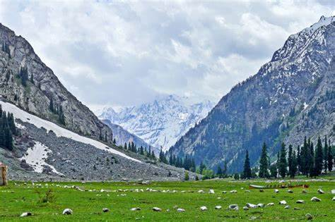

Beautiful swat
Also known as switzerland of pakistan due to its beauty.
The average elevation of Swat is 980 m (3,220 ft), resulting in a considerably cooler and wetter climate compared to the rest of Pakistan. With lush forests, verdant alpine meadows, and snow-capped mountains, Swat is one of the country's most popular tourist destinations. Want to visit?, just google your favorite place and book a tour.
Book a guide More infoMore than a dozen lakes in swat, Pakistan
Swat's total area is 5,337 square kilometres (2,061 sq mi). In terms of administrative divisions, Swat is surrounded by Chitral, Upper Dir and Lower Dir to the west, Gilgit-Baltistan to the north, and Kohistan, Buner and Shangla to the east and southeast, respectively. The former tehsil of Buner was granted the status of a separate district in 1991
The Swat Valley is enclosed by mountains that forms a natural geographic boundary for it. The Swat River whose headwaters arise in the 18,000-19,000 foot tall Hindu Kush runs through the length of the region. The main area consists of many sub valleys such as Kalam, Bahrain, Matiltan, Utror, and Gabral.
Immediately want to visit swat?I know the beauty of Swat has more attractio than gravity has, just kidding.